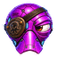

OCTOBOT
World Chat ALPHA
Connecting…
World Chat
GM Messages
Looking for Group
Want to Buy
Want to Sell
Public World channel only. Listings expire five minutes after their last message; repeated recruitment for the same dungeon refreshes the listing. Trade listings are player advertisements, not verified auctions. GM messages are identified by the server chat flag. Alpha: coverage and classification may be incomplete.